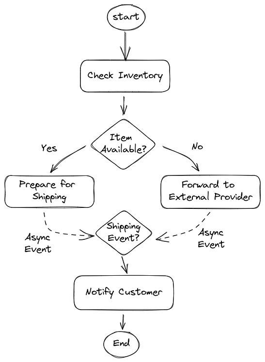
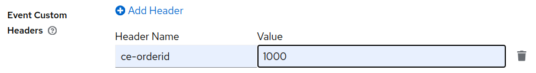
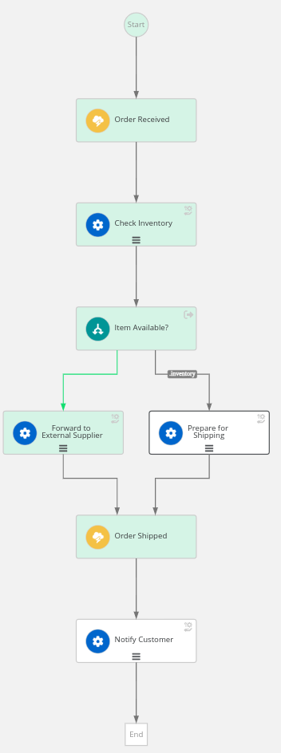

Long Running Workflows
Having a graphical notation to orchestrate services is nice, but you might wonder if it is worth it!
The real power of a workflow engine gets into action when the workflow is long running: in other words, when it reaches a pause status, because it has to wait an asynchronous event, a manual intervention or a timer.
In this section, you will evolve the workflow to add this long running nature!
From a use case perspective, the workflow has to wait for an asynchronous event which confirms the completion shipment procedures.
The following picture shows an high level design:

Wait Event Sprint
For sake of simplicity, let’s imagine that an external integration service is able to homogenize events arriving from the internal department and those arriving from the external supplier.
The event will bring an important information the correlation key, in our use case is the orderId.
As the name implies, the correlation key is important to address the correct workflow instance.
The correlation key MUST BE initialized at creation time with an incoming CloudEvent.
This implies two catching event nodes are required:
-
one at the beginning of the flow to start the workflow
-
another after the
Prepare for ShippingandForward to External Supplierto wait the shipping event
Open the workflow editor and follow these steps:
-
Before the
startdeclaration, add the following event declaration:events: - name: orderEvent kind: consumed type: OrderEventType source: Client correlation: - contextAttributeName: orderid - name: shippingEvent kind: consumed type: ShippingEventType source: Shipper correlation: - contextAttributeName: orderidThe definition is quite self explanatory: the workflow can consume two different types of events:
OrderEventTypeandShippingEventType, from two different sources. One important aspect is the correlation definition which says that CloudEvent has to carry a special attribute in the header namedorderid(CloudEvents attributes must be lowercase). -
Add an event state at the beginning of the workflow:
-
Insert the following immediately after the declaration of
states:- name: Order Received type: event onEvents: - eventRefs: - orderEvent transition: Check Inventory -
Update the
startattribute to match the event stateOrder Received, this is the graphical outcome:
-
-
Add another event state at the end of the workflow:
-
Insert another event state declaration:
-
name:
Order Shipped -
eventRef:
shippingEventIt’s worth noting that the order of the declarations is irrelevant, but to make the file easier to read, it’s a good practice to follow the same order in the textual representation as in the graphical one.
-
-
Update the
Prepare for ShippingandForward to External Supplierstates to transition in theOrder Shippedevent node; on both declarations:-
remove
end: true -
add
transition: Order Shipped
The resulting diagram is:
-

-
-
To complete the use case implementation, you have to add another operation that is responsible of notifying the customer about the shipping status with usual tracking information:
-
copy the previous operation state
Prepare for Shipping -
rename it to
Notify Customer -
update the message to match the operation name
-
remove the existing transition and add the attribute
end: true
-
-
Update the previous
Order Shippedevent state adding the transition toNotify Customer
|
You can compare your resulting workflow with the expected solution at this stage in |
Eventing
Events in Serverless Workflow comply to the CloudEvents standard which is under the Cloud Native Computing Foundation.
Moreover, Serverless Workflow, and in general OpenShift Serverless Logic, aims to fit seamlessly in Knative eventing.
For such a reason, Serverless Workflow exposes two channels to ingest CloudEvents:
-
HTTP POST
-
Kafka Broker
The developer runtime listens for CloudEvents on the root path of the standard HTTP channel (e.g. http:/localhost:8080/).
In general, the Serverless Workflow runtime can expose multiple endpoints to ingest different types of events.
Test the events
To start the workflow and subsequently advance it, you have to inject two types of CloudEvent:
-
OrderEventType -
ShippingEventType
The Dev UI offers a convenient web form to inject CloudEvents in the Serverless Workflow runtime:
-
Open the
Workflow Definitionspage. -
In workflow list, click on the event icon:

-
Fill in the form with the following values:
-
Event Type :
OrderEventType -
Event Custom Headers :
ce-orderid = 1000 -
Event Data :
{"orderId": "1000", "item": "1111"}
-
-
Click
Trigger
The CloudEvent is sent via the HTTP protocol, and by convention the CloudEvent attributes are sent as an HTTP header with a ce- prefix.
The CloudEvent attribute orderid matches the contextAttributeName used in the event definition for correlation. In other words, orderid is the hook to the workflow instance, you can run multiple workflow instances in parallel, but they must wait for a distinct orderid.
|
Open the Workflow Details page to inspect the instance status: you should see the the workflow instance still active, waiting for the shipping event:

To advance the workflow execution, you have to send another event:
-
Open the
Workflow Definitionspage. -
In workflow list, click on the event icon:
-
Fill in the form with the following values:
-
Event Type :
ShippingEventType -
Event Custom Headers :
ce-orderid = 1000
-
-
Click
Trigger
Use the Workflow Details page to check that the workflow instance is correctly completed.
CONGRATULATION!!! Your Serverless Workflow resumes when asynchronous events arrives!